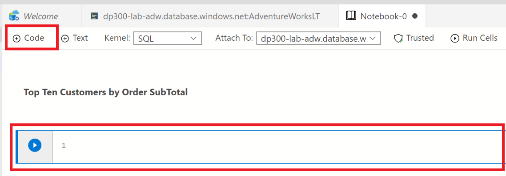

实验室 2 – 部署 PaaS 数据库
预计完成时间： 35-40 分钟
先决条件： 无
实验室文件： 无
实验室概述
学生将配置部署具有虚拟网络终结点的 Azure SQL 数据库所需的基本资源。将使用实验室 VM 中的 Azure Data Studio 验证到 SQL 数据库的连接。最后，将创建一个 Azure Database for PostgreSQL。
实验室目标
学生将学习以下内容：
-
配置基本资源
-
部署 Azure SQL 数据库
-
使用 Azure Data Studio 连接到 Azure SQL 数据库
-
部署 Azure Database for PostgreSQL
应用室场景
作为 AdventureWorks 的数据库管理员，你将建立一个新的 SQL 数据库，其中包括一个虚拟网络终结点，以增加和简化部署的安全性。将使用 Azure Data Studio 评估 SQL Notebook 在数据查询和结果保留方面的使用。
最后，将部署 Azure Database for PostgreSQL 以支持其他数据系统需求。
练习 1：配置基本资源
任务 1：创建资源组
-
启动浏览器，然后打开 Azure 门户 http://portal.azure.com，使用适当的凭据登录
-
使用所需的信息完成“创建资源组”向导，以创建 RG。
任务 2：创建虚拟网络
-
单击“+ 创建”打开“创建虚拟网络”页面。在“基本信息”选项卡上，完成以下信息：
-
为 Azure SQL 数据库终结点配置虚拟网络的 IP 范围
练习 2：部署 Azure SQL 数据库
任务 1：部署 Azure SQL 数据库
-
在 Azure 门户中，单击左侧导航栏顶部的 “+ 创建资源”

-
单击 “创建” 按钮
-
使用以下输入完成“创建 SQL 数据库基础知识”屏幕，然后单击“下一页： 网络
-
订阅：选择实验室订阅
-
资源组： DP-300-Lab02 （练习 1 中创建的 RG）
-
数据库名称： AdventureWorksLT
-
服务器：单击 “新建”。 在“新建服务器”边栏中，完成以下表单：
-
服务器名称： dp300-lab-<your initials (lower case)> （服务器名称必须是全局唯一）
-
服务器管理员登录名： dp300admin
-
密码： dp300P@ssword!
-
确认密码： dp300P@ssword!
-
位置：选择离你最近的区域（与练习 1 相同）
-
你的“新建服务器”边栏应该与下面显示的边栏相似。单击 “确定”

-
-
想要使用弹性池： 否
-
计算 + 存储：单击 “配置数据库”
- 在“配置”屏幕中，选择“基本”
-
单击 “基本”
-
单击 “应用” 按钮
-
备注：记下该服务器名称和你的登录信息。你将在后续实验室中使用此信息。
-
如果看到选项“备份存储冗余”，请保留默认值：异地冗余备份存储。
-
完成“创建专用终结点”浮出控件，如下所示：
-
单击 “下一步：安全性” 按钮。 将启用 Azure Defender for SQL 保留 为默认的“以后再说”。然后单击 “下一步：其他设置” 按钮。
-
在“其他设置”页上，选择以下选项：
-
单击“查看 + 创建”
-
查看设置，然后单击“创建”。
-
部署完成后，单击“转到资源”按钮
任务 2：启用对新 SQL Server 的所有 Azure 服务访问
-
在“SQL 数据库”边栏选项卡中，单击顶部的服务器名称链接
-
在 SQL Server 对象的导航边栏选项卡上，单击“安全性”下面的 “防火墙和虚拟网络”
-
将“允许 Azure 服务和资源访问此服务器”设置为 “是”
-
单击 “保存”
练习 3：连接至 Azure SQL 数据库
任务 1：在 Azure Data Studio 中注册 Azure SQL 数据库实例
-
从实验室 VM 启动 Azure Data Studio (ADS)
-
当 Azure Data Studio 打开时，单击 Azure Data Studio 左侧边栏中的“连接”按钮，然后单击“添加连接”按钮

-
在“连接”侧边栏中的“连接详细信息”部分填写连接信息，以连接到上一个练习中创建的 SQL 数据库
-
连接类型：Microsoft SQL Server
-
服务器：输入在练习 2，任务 1 中创建的 SQL Server 的名称。例如：dp300-lab-xx.database.windows.net
[请注意，系统要求你使用首字母缩写创建服务器名称，而不是“xx”] -
身份验证类型：SQL 登录名
-
用户名：dp300admin
-
密码： dp300P@ssword!
-
展开数据库下拉列表以选择 AdventureWorksLT。
- 备注：可能会要求添加防火墙规则，以允许你的客户端 IP 访问此服务器。如果系统要求你添加防火墙规则，请单击“添加帐户”，然后登录到 Azure 帐户。在“创建新防火墙规则”屏幕中，单击“确定”。

返回连接侧边栏，继续填写连接详细信息：
-
服务器组将保持 <default> 状态
-
如果需要，可以使用数据库的易记名称填充名称（可选）
-
查看设置，然后单击 “连接”

-
-
Azure Data Studio 将连接到数据库，并显示有关数据库的一些基本信息，以及部分对象列表

任务 2：使用 SQL Notebook 查询 Azure SQL 数据库
-
在连接到该实验室的 AdventureWorksLT 数据库的 Azure Data Studio 中，单击 “新建笔记本” 按钮

-
单击 “+文本” 按钮，在笔记本中添加新的文本框

备注： 在笔记本中，你可以嵌入纯文本以解释查询或结果集。
-
输入文本 “按订单小计的前十大客户”，根据需要将其设为粗体

-
单击 “+ 代码” 按钮，在笔记本末尾添加新单元格以在其中添加查询
 -
将以下 SQL 语句粘贴到新单元格中
select top 10 cust.[CustomerID], cust.[CompanyName], sum(sohead.[SubTotal]) as OverallOrderSubTotal
from [SalesLT].[Customer] cust
inner join [SalesLT].[SalesOrderHeader] sohead
on sohead.[CustomerID] = cust.[CustomerID]
group by cust.[CustomerID], cust.[CompanyName]
order by [OverallOrderSubTotal] desc
-
单击带有箭头的蓝色圆圈执行查询。注意结果如何与查询一起包含在单元格中。
-
单击 “+ 文本” 按钮 添加新文本单元格。
-
输入文字 “十大订购产品类别”，根据需要将其设为粗体
-
再次单击 “+ 代码” 按钮添加一个新单元格，并将以下 SQL 语句粘贴到该单元格中
select top 10 cat.[Name] as ProductCategory, sum(detail.[OrderQty]) as OrderedQuantity
from salesLT.[ProductCategory] cat
inner join saleslt.[Product] prod
on prod.[ProductCategoryID] = cat.[ProductCategoryID]
inner join salesLT.[SalesOrderDetail] detail
on detail.[ProductID] = prod.[ProductID]
group by cat.[name]
order by [OrderedQuantity] desc
-
单击带有箭头的蓝色圆圈以执行查询
-
要运行笔记本中的所有单元并显示结果，请单击工具栏中的 “运行单元格” 按钮

-
在 Azure Data Studio 中，（通过“保存”或“另存为”）将笔记本从“文件”菜单保存到 D:\Labfiles\Deploy Azure SQL 数据库（此文件夹已存在于 VM）目录中。从 Azure Data Studio 内部关闭笔记本的选项卡。从“文件菜单”中，选择“打开文件”，然后打开刚刚保存的笔记本。观察查询结果与查询一起保存在笔记本中。
练习 4：部署 Azure Database for PostgreSQL 数据库
任务 1：部署 PostgreSQL 数据库
-
在 Azure 门户中，单击左侧导航栏顶部的 “+ 创建资源”
-
在顶部的搜索框中搜索“Azure Database for PostgreSQL，然后在结果中单击“Azure Database for PostgreSQL”
-
单击 “创建” 按钮
-
使用以下输入来完成“单服务器基本信息”屏幕：
-
单击 “查看 + 创建”。
-
查看设置，然后单击 “创建”
-
部署完成后，单击 “转到资源”。
任务 2：启用对 PostgreSQL 数据库的所有 Azure 服务访问
-
保存后，再次单击右上方的“添加客户端 IP”按钮，将客户端 IP 添加到防火墙。
-
在左上方单击 “保存”。
任务 3：使用 Azure Data Studio 连接到 PostgreSQL 数据库
备注： 将 PostgreSQL 扩展安装到 Azure Data Studio 后，可以查询 PostgreSQL。该扩展已预安装在实验室 VM 上。
-
在实验室 VM 上的 Azure Data Studio 中，确保“连接”侧边栏已展开 - 如果未展开，请在左侧导航栏中单击 “连接” 按钮。
-
在“连接详细信息”侧边栏中，输入以下信息以连接到先前任务的 PostgreSQL 数据库：
-
连接类型： PostgreSQL
-
服务器：输入任务 1 中创建的 PostgreSQL 服务器名称。例如： dp300-lab02-xx.postgres.database.azure.com （你可以在门户的“概述”窗格中找到服务器全名。你可能需要将 xx 替换为你已添加的特定字母。)
-
身份验证类型： 密码
-
用户名： dp300admin@dp300-lab02-xx （请注意，用户名必须包含上面指定的主机名；请使用后缀替代’xx’）可在门户的“概述”窗格中找到管理员用户名。）
-
密码： dp300P@ssword!
-
数据库名称将仍未 “<default>”
-
服务器组将保持 <default> 状态
-
如果需要，可以使用数据库的易记名称填充名称（可选）
-
-
单击 “连接”
-
注意 Azure Data Studio 与 PostgreSQL 数据库的连接